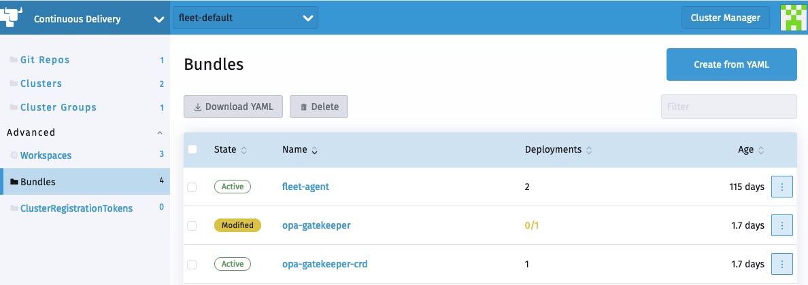

Generierung von Diffs zum Ignorieren modifizierter GitRepos
Continuous Delivery in Rancher wird von SUSE® Rancher Prime Continuous Delivery unterstützt. Wenn ein Benutzer ein GitRepo CR hinzufügt, erstellt Continuous Delivery die zugehörigen Fleet-Bundles.
Sie können auf diese Bundles zugreifen, indem Sie zum Cluster Explorer (Dashboard UI) navigieren und den Abschnitt Bundles auswählen.
Die gebündelten Charts können einige Objekte enthalten, die zur Laufzeit geändert werden, zum Beispiel ist in ValidatingWebhookConfiguration das caBundle leer und das CA-Zertifikat wird vom Cluster injiziert.
Dies führt dazu, dass der Status des Bundles und des zugehörigen GitRepo als "Modifiziert" gemeldet wird.

Zugehöriges Bundle

SUSE® Rancher Prime Continuous Delivery Bundles unterstützen die Möglichkeit, ein benutzerdefiniertes jsonPointer-Patch anzugeben.
Mit dem Patch können Benutzer SUSE® Rancher Prime Continuous Delivery anweisen, Objektmodifikationen und ganze Objekte zu ignorieren.
Generierung von comparePatches mit fleet bundlediff
Der fleet bundlediff CLI-Befehl liest die bereits in Bundle und BundleDeployment Statusfeldern vorhandenen Diff-Informationen und zeigt sie in einer menschenlesbaren Form an.
Es kann auch einen einsatzbereiten diff: Snippet im fleet.yaml-Format generieren, sodass Sie die beobachtete Abweichung akzeptieren können, ohne JSON-Patch-Pfade manuell zu erstellen.
Anzeigen von Diffs
# Show all diffs across all namespaces, grouped by Bundle
fleet bundlediff
# Show diffs for a specific Bundle
fleet bundlediff --bundle my-bundle
# Show diffs for a specific BundleDeployment
fleet bundlediff --bundle-deployment my-bundle-deployment -n cluster-fleet-local-local-abc123
# Output in JSON format
fleet bundlediff --jsonDie Standardtextausgabe gruppiert Ergebnisse nach Bundle und listet jede modifizierte oder nicht einsatzbereite Ressource zusammen mit ihrem JSON Merge Patch auf:
Bundle: my-bundle
BundleDeployments with diffs: 1
━━━━━━━━━━━━━━━━━━━━━━━━━━━━━━━━━━━━━━━━━━━━━━━━━━━━━━━━━━━━━━━━━━
BundleDeployment: cluster-fleet-local-local-abc123/my-bundle-deployment
Modified Resources (1):
Resource: ConfigMap.v1 default/my-config
Status: Modified
Patch:
{
"metadata": {
"annotations": {
"timestamp": "2024-01-15T10:30:00Z"
}
}
}Generierung eines fleet.yaml comparePatches Snippets
Verwenden Sie --fleet-yaml zusammen mit --bundle-deployment, um einen diff:-Block zu erzeugen, den Sie direkt in Ihr fleet.yaml einfügen können. Der Befehl konvertiert das beobachtete JSON Merge Patch in remove Operationen und fügt sie mit allen bereits auf dem comparePatches konfigurierten Bundle zusammen, sodass bestehende Ignorierungen intakt bleiben.
fleet bundlediff \
--fleet-yaml \
--bundle-deployment my-bundle-deployment \
-n cluster-fleet-local-local-abc123Beispielausgabe:
diff:
comparePatches:
- apiVersion: v1
kind: ConfigMap
name: my-config
namespace: default
operations:
- op: remove
path: /metadata/annotations/timestampSie können die Ausgabe umleiten und an Ihr fleet.yaml in Git anhängen:
fleet bundlediff \
--fleet-yaml \
--bundle-deployment my-bundle-deployment \
-n cluster-fleet-local-local-abc123 >> fleet.yamlNachdem Sie das aktualisierte fleet.yaml committet und gepusht haben, reconciliert SUSE® Rancher Prime Continuous Delivery die Änderung und das Bundle wechselt von Modified zu Ready. Das Feld selbst wird nicht zurückgesetzt. SUSE® Rancher Prime Continuous Delivery hört einfach auf, es als Drift zu melden.
|
Das |
Siehe fleet bundlediff [SUSE® Rancher Prime Continuous Delivery bundlediff] für die vollständige Flaggenreferenz.
Ignorieren von Objektmodifikationen
Einfaches Beispiel
In diesem einfachen Beispiel erstellen wir einen Service und eine ConfigMap, auf die wir einen Bundle-Diff anwenden.
Gatekeeper-Beispiel
In diesem Beispiel versuchen wir, opa-gatekeeper mithilfe von Continuous Delivery in unseren Clustern bereitzustellen.
Das opa-gatekeeper-Bundle, das mit dem opa GitRepo verbunden ist, befindet sich im modifizierten Zustand.
Jeder Pfad im GitRepo CR hat ein zugehöriges Bundle CR. Der Benutzer kann die Bundles und den erforderlichen Diff im Bundle-Status anzeigen.
In unserem Fall sind die festgestellten Unterschiede wie folgt:
summary:
desiredReady: 1
modified: 1
nonReadyResources:
- bundleState: Modified
modifiedStatus:
- apiVersion: admissionregistration.k8s.io/v1
kind: ValidatingWebhookConfiguration
name: gatekeeper-validating-webhook-configuration
patch: '{"$setElementOrder/webhooks":[{"name":"validation.gatekeeper.sh"},{"name":"check-ignore-label.gatekeeper.sh"}],"webhooks":[{"clientConfig":{"caBundle":"Cg=="},"name":"validation.gatekeeper.sh","rules":[{"apiGroups":["*"],"apiVersions":["*"],"operations":["CREATE","UPDATE"],"resources":["*"]}]},{"clientConfig":{"caBundle":"Cg=="},"name":"check-ignore-label.gatekeeper.sh","rules":[{"apiGroups":[""],"apiVersions":["*"],"operations":["CREATE","UPDATE"],"resources":["namespaces"]}]}]}'
- apiVersion: apps/v1
kind: Deployment
name: gatekeeper-audit
namespace: cattle-gatekeeper-system
patch: '{"spec":{"template":{"spec":{"$setElementOrder/containers":[{"name":"manager"}],"containers":[{"name":"manager","resources":{"limits":{"cpu":"1000m"}}}],"tolerations":[]}}}}'
- apiVersion: apps/v1
kind: Deployment
name: gatekeeper-controller-manager
namespace: cattle-gatekeeper-system
patch: '{"spec":{"template":{"spec":{"$setElementOrder/containers":[{"name":"manager"}],"containers":[{"name":"manager","resources":{"limits":{"cpu":"1000m"}}}],"tolerations":[]}}}}'Basierend auf dieser Zusammenfassung gibt es drei Objekte, die mit einem Patch versehen werden müssen.
Wir werden uns diese nacheinander ansehen.
1. ValidatingWebhookConfiguration:
Die gatekeeper-validating-webhook-configuration ValidatingWebhook hat zwei ValidatingWebhooks in ihrer Spezifikation.
In Fällen, in denen mehr als ein Element im Feld einen Patch benötigt, wird dieser Patch als $setElementOrder/ELEMENTNAME bezeichnet.
Aus diesen Informationen können wir sehen, welche beiden ValidatingWebhooks gemeint sind:
"$setElementOrder/webhooks": [
{
"name": "validation.gatekeeper.sh"
},
{
"name": "check-ignore-label.gatekeeper.sh"
}
],Innerhalb jedes ValidatingWebhook sind die Felder, die ignoriert werden müssen, wie folgt:
{
"clientConfig": {
"caBundle": "Cg=="
},
"name": "validation.gatekeeper.sh",
"rules": [
{
"apiGroups": [
"*"
],
"apiVersions": [
"*"
],
"operations": [
"CREATE",
"UPDATE"
],
"resources": [
"*"
]
}
]
},und
{
"clientConfig": {
"caBundle": "Cg=="
},
"name": "check-ignore-label.gatekeeper.sh",
"rules": [
{
"apiGroups": [
""
],
"apiVersions": [
"*"
],
"operations": [
"CREATE",
"UPDATE"
],
"resources": [
"namespaces"
]
}
]
}Zusammenfassend müssen wir die Felder rules und clientConfig.caBundle in unserer Patch-Spezifikation ignorieren.
Das Feld webhook in der ValidatingWebhookConfiguration Spezifikation ist ein Array, daher müssen wir die Elemente nach ihren Indexwerten ansprechen.

Basierend auf diesen Informationen würde unser Diff-Patch wie folgt aussehen:
- apiVersion: admissionregistration.k8s.io/v1
kind: ValidatingWebhookConfiguration
name: gatekeeper-validating-webhook-configuration
operations:
- {"op": "remove", "path":"/webhooks/0/clientConfig/caBundle"}
- {"op": "remove", "path":"/webhooks/0/rules"}
- {"op": "remove", "path":"/webhooks/1/clientConfig/caBundle"}
- {"op": "remove", "path":"/webhooks/1/rules"}2. Deployment gatekeeper-controller-manager:
Das Deployment gatekeeper-controller-manager wurde geändert, da CPU-Limits und Toleranzen angewendet wurden (die nicht im aktuellen Bundle enthalten sind).
{
"spec": {
"template": {
"spec": {
"$setElementOrder/containers": [
{
"name": "manager"
}
],
"containers": [
{
"name": "manager",
"resources": {
"limits": {
"cpu": "1000m"
}
}
}
],
"tolerations": []
}
}
}
}In diesem Fall gibt es nur 1 Container in der Container-Spezifikation des Deployments, und diesem Container wurden CPU-Limits und Toleranzen hinzugefügt.
Basierend auf diesen Informationen würde unser Diff-Patch wie folgt aussehen:
- apiVersion: apps/v1
kind: Deployment
name: gatekeeper-controller-manager
namespace: cattle-gatekeeper-system
operations:
- {"op": "remove", "path": "/spec/template/spec/containers/0/resources/limits/cpu"}
- {"op": "remove", "path": "/spec/template/spec/tolerations"}3. Deployment gatekeeper-audit:
Das Deployment gatekeeper-audit wurde ähnlich wie das gatekeeper-controller-manager geändert, mit zusätzlichen CPU-Limits und Toleranzen.
{
"spec": {
"template": {
"spec": {
"$setElementOrder/containers": [
{
"name": "manager"
}
],
"containers": [
{
"name": "manager",
"resources": {
"limits": {
"cpu": "1000m"
}
}
}
],
"tolerations": []
}
}
}
}Ähnlich wie beim gatekeeper-controller-manager gibt es nur 1 Container in der Container-Spezifikation des Deployments, und diesem wurden CPU-Limits und Toleranzen hinzugefügt.
Basierend auf diesen Informationen würde unser Diff-Patch wie folgt aussehen:
- apiVersion: apps/v1
kind: Deployment
name: gatekeeper-audit
namespace: cattle-gatekeeper-system
operations:
- {"op": "remove", "path": "/spec/template/spec/containers/0/resources/limits/cpu"}
- {"op": "remove", "path": "/spec/template/spec/tolerations"}Alles Zusammenbringen
Wir können jetzt all diese Patches wie folgt zusammenfassen:
diff:
comparePatches:
- apiVersion: apps/v1
kind: Deployment
name: gatekeeper-audit
namespace: cattle-gatekeeper-system
operations:
- {"op": "remove", "path": "/spec/template/spec/containers/0/resources/limits/cpu"}
- {"op": "remove", "path": "/spec/template/spec/tolerations"}
- apiVersion: apps/v1
kind: Deployment
name: gatekeeper-controller-manager
namespace: cattle-gatekeeper-system
operations:
- {"op": "remove", "path": "/spec/template/spec/containers/0/resources/limits/cpu"}
- {"op": "remove", "path": "/spec/template/spec/tolerations"}
- apiVersion: admissionregistration.k8s.io/v1
kind: ValidatingWebhookConfiguration
name: gatekeeper-validating-webhook-configuration
operations:
- {"op": "remove", "path":"/webhooks/0/clientConfig/caBundle"}
- {"op": "remove", "path":"/webhooks/0/rules"}
- {"op": "remove", "path":"/webhooks/1/clientConfig/caBundle"}
- {"op": "remove", "path":"/webhooks/1/rules"}Wir können diese jetzt direkt zum Bundle hinzufügen, um zu testen, und auch dasselbe in das fleet.yaml in Ihrem GitRepo committen.
Sobald diese hinzugefügt sind, sollte das GitRepo bereitgestellt werden und den Status "Aktiv" erhalten.
Gesamte Objekte ignorieren
Beim Installieren eines Charts wie Consul wird ein Job mit dem Namen consul-server-acl-init erstellt und anschließend gelöscht, sobald er erfolgreich abgeschlossen ist.
Dieses Chart kann installiert werden, indem ein GitRepo erstellt wird, das auf ein Git-Repository zeigt, mithilfe eines fleet.yaml wie:
defaultNamespace: consul
helm:
releaseName: test-consul
chart: "consul"
repo: "https://helm.releases.hashicorp.com"
values:
global:
name: consul
acls:
manageSystemACLs: trueDie Installation dieses Charts führt dazu, dass das GitRepo einen Modified Status meldet, wobei der Job consul-server-acl-init fehlt, sobald dieser Job abgeschlossen ist.
Dies kann mit dem folgenden Bundle-Diff in unserem fleet.yaml behoben werden:
diff:
comparePatches:
- apiVersion: batch/v1
kind: Job
namespace: consul
name: consul-server-acl-init
operations:
- {"op":"ignore"}In einigen Fällen ist der vollständige Name des Jobs möglicherweise im Voraus nicht bekannt, beispielsweise wenn er generiert wird. Darüber hinaus kann eine bestimmte Arbeitslast mehrere Jobs im selben Namespace erstellen, was typischerweise zu einem Bundle-Diff pro Job führen würde.
Um diese Situationen leichter handhabbar zu machen, können Jobs auch ignoriert werden:
-
durch einen regulären Ausdruck auf ihren Namen, in diesem Fall könnte der obige Diff so aussehen:
diff:
comparePatches:
- apiVersion: batch/v1
kind: Job
namespace: consul
name: 'consul-server.*'
operations:
- {"op":"ignore"}
-
oder indem ein leeres
nameFeld angegeben wird, oder indem dieses Feld ganz weggelassen wird, in diesem Fall werden alle Jobs, die in diesem Namespace leben (in diesem Beispiel imconsulNamespace), ignoriert.
Weitere Informationen zur unterstützten Regex-Syntax hier.
Horizontaler Pod-Autoscaler
Beim Umgang mit Deployments oder StatefulSets, die von einem Horizontalen Pod-Autoscaler referenziert werden, sind Bundle-Diffs nicht mehr notwendig, um Aktualisierungen der Replikazahlen innerhalb des konfigurierten Intervalls des HPA zu adressieren. Der Fleet agent wird diese Aktualisierungen automatisch herausfiltern; als Ergebnis wird das Quell-Bundle-Deployment nicht als modifiziert betrachtet.
Wenn jedoch das replicas Feld eines Deployments oder eines StatefulSets auf einen Wert über oder unter dem vom HPA tolerierten Intervall gesetzt ist, wird diese Änderung weiterhin im Status des Quell-Bundle-Deployments angezeigt.
Sowohl autoscaling/v1 als auch autoscaling/v2 werden unterstützt.
Ein leeres minReplicas Feld in einem HPA wird als 1 interpretiert.